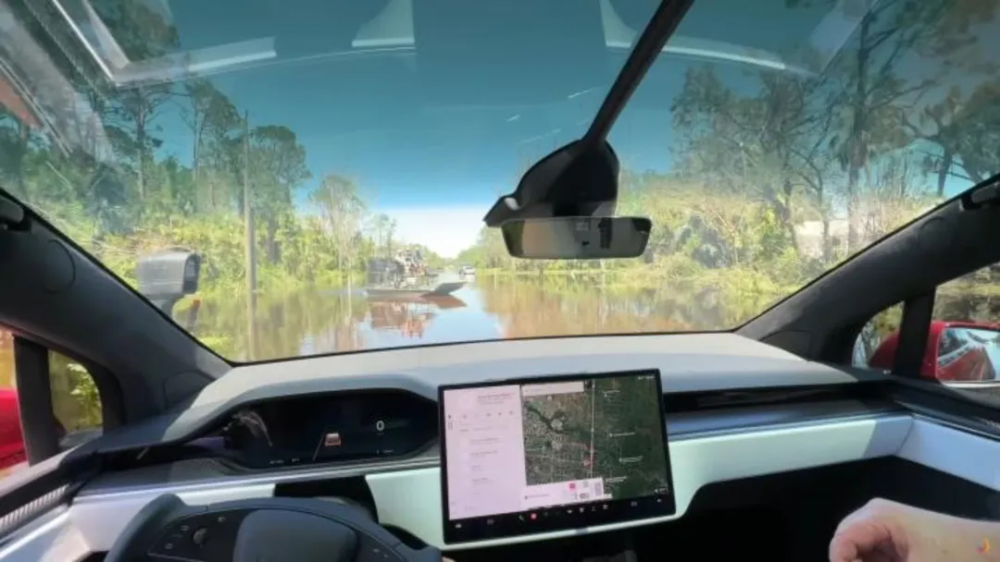

Servicios de telecomunicaciones

Los coches eléctricos se han convertido en los vehículos del futuro o, al menos,
eso es lo que piensan muchas personas. Tal es la confianza de algunos usuarios
por este tipo de vehículos que, incluso, ponen en peligro su integridad física
dentro de estos vehículos. Lo último que se ha visto es una persecución digna de una comedia.
Esta historia tiene lugar en Alemania y cuenta como protagonista a un usuario con un vehículo Tesla en su posesión.
El día 29 de diciembre del año 2022 en una autopista alemana saliendo de Bamberg y con destino a Bayreuth ocurrió un suceso que todavía tiene impactados a los agentes de policía de Alemania.
Lo que presenciaron los oficiales fue un vehículo Tesla que transitaba a cierta velocidad y por esta autopista. No iba ni demasiado deprisa, ni demasiado lento y esto suscitó ciertas sospechas por lo que decidieron darle el alto al vehículo con la sorpresa de que el Tesla seguía manteniendo su ruta y velocidad.
Esta persecución tuvo una duración de quince minutos en la cual el coche de los oficiales seguía a este Tesla de forma constante, pero a una distancia prudente. Al ver que la situación se mantenía constante lo que hicieron los oficiales fue ponerse a la misma altura que el vehículo para comprobar qué era lo que estaba ocurriendo en el habitáculo.
Esta persona en un Tesla ha protagonizado una escena digna de una comedia
Al colocarse a la misma altura lo que han podido ver es que la persona, supuestamente al volante, era un varón de 45 años que se encontraba complemente dormido. No es que se hubiese quedado dormido por accidente, si no que todo indica que lo habría hecho de forma completamente premeditada.
Y, es que, la posición del asiento completamente reclinada como las manos cruzadas fuera del volante indicarían que habría tomado la decisión de hacer que el Tesla le llevase hasta la ciudad mientras él dormía. ¿Cuál es el problema de esto? En Alemania el piloto automático de los coches eléctricos de Tesla no está permitido.
Teniendo en cuenta que no está permitido lo que ha ocurrido finalmente es que se le ha retirado el permiso de conducir cuando, por fin, ha despertado y ha acatado las ordenes de estacionarse en un lugar de la autopista. Eso sí, lo peor de todo es que este conductor habría colocado un peso en el volante para engañar al sistema de conducción del Tesla.
(c)Todos los derechos reservados. Diseñado por Eduardo Villacampa